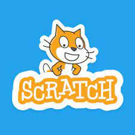

Scratch is a coding program.Scratch has become the world's largest coding community for kids. In 2022, Scratch reached more than 100 million registered users.Scratch is a high-level block-based visual programming language and website aimed primarily at children as an educational tool, with a target audience of ages 8 to 16. Users on the site, called Scratchers, can create projects on the website using a block-like interface.
